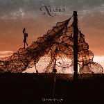

| Artist: | Xinema |
| Title: | Different Ways |
| Label: | self produced, later released on Unicorn Records UNCR-5004 |
| Length(s): | 58 minutes |
| Year(s) of release: | 2001 |
| Month of review: | [05/2002] |
| 1) | In The Scent Of The Night | 5.45 |
| 2) | Over The Sea | 3.51 |
| 3) | The Last Flower | 4.37 |
| 4) | Timing | 4.29 |
| 5) | One Day | 3.40 |
| 6) | Different Ways | 4.50 |
| 7) | Maybe Time | 3.06 |
| 8) | Across The Styx | 4.42 |
| 9) | Distant Lights | 5.02 |
| 10) | How Can I Believe | 4.38 |
| 11) | The Secret | 5.56 |
| 12) | Blind Is The Light | 7.00 |
Over The Sea continues where the previous track left of, another pointy track very much in the vein of the Canadians, although sometimes a little poppier.
The Last Flower shifts back a couple of gears, being more of a ballad. The double vocals work out quite nicely in this track, as does the guitar and key used during the bridge. Although in some ways this track was in great danger of becoming highly sappy, they managed to steer away from that, with good results.
Timing once again is pretty up tempo, with some nice jangling guitar riffs, as well as ample keys and a haunted bridge.
One Day is more gently flowing, and with that a bit more normal, edging towards regular pop. Not a bad song, but not very striking either.
The title track Different Ways continues the trend of the previous, being also a gentle and nice pop song.
Maybe Time returns to the previous higher tempos, making the track a bit spicier, but still falling behind what went by before.
Across The Styx is another one of those gentle flowing tracks, although it does feature a lengthy guitar solo.
Distant Lights starts plain pop, with the kind of choppy drumming that always irritates me, but the chorus suddenly lets the days of Saga relive.
How Can I Believe is flowing pop track again, although with some Saga guitars.
The Secret is more piano-vocal based, although the rather nice bridge features keys and guitars. It also manages to work towards a nice climax, displaying something that wasn't displayed before. After being lulled for several songs, this just might be the album's best track.
Blind Is The Light starts with a keyboard line that reminds me of seventies Eloy, but is followed up by something more speedy.